AUSTRIA
Bielerhöhe am Silvrettasee
Piz Buin, Gasthof, Bielerhöhe am
Silvrettasee
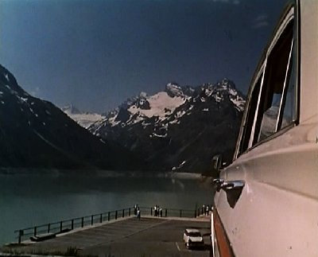
THE PERSUADERS!:
Five Miles To Midnight
(Val Guest: 1970)
Bahnhof Rum, Innsbruck, Austria - Judge Futon and Manny Howard travel
first class by train and discuss the progress of Frank Rocco and his
escorts (47°16'43.43"N, 11°26'29.38"E).
(Identified by Pierre Alfonsi, September 2012)
Innsbruck-Land
Bahnhof Rum, Innsbruck

THE PERSUADERS!:
Five Miles To Midnight
(Val Guest: 1970)
Bahnhof Rum, Innsbruck, Austria - Judge Futon and Manny Howard travel
first class by train and discuss the progress of Frank Rocco and his
escorts (47°16'43.43"N, 11°26'29.38"E).
(Identified by Pierre Alfonsi, September 2012)
Sellrain
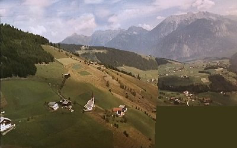
THE SAINT: The Russian Prisoner
(John Moxey: February 1966)
Simon Templar and Irma Jorovitch travel to Switzerland and fly across
Alpine pastures into Geneva Airport..
(Identified by Pierre Alfonsi, May 2023)
THE SAINT: The Death Game
(Leslie Norman: November 1966)
Simon flies into Zurich airport posing as Bill Bast.
(Identified by Pierre Alfonsi, May 2023)
Salzburg
Gwandhaus/Schlosshotel St. Rupert,
nr Hellbrunn Palace
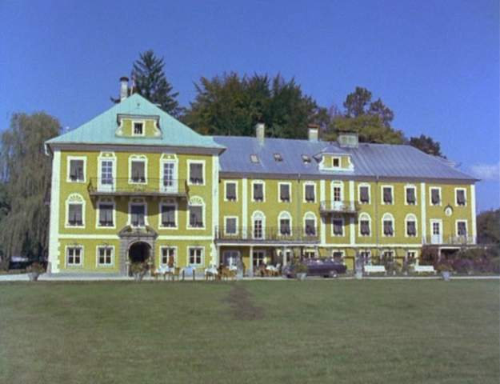
THE PROTECTORS: WAM Part 1 (Jeremy Summers:
1973)
Harry and Caroline go here for lunch - when Paul realizes he has been
spotted, he calls them.
(Identified by Jonathan Gibbs, August 2016)
Salzburg
THE PRISONER: Do Not Forsake Me Oh My Darling
(Pat Jackson: August 1967)
Number 6 drives across Europe to Kandersfeld, Austria. On the way he
drives through the Domplatz in Salzburg (World Backgrounds 301183).
JASON KING: An Author in Search of Two Characters
(Cyril Frankel: 1970)
Michael Strong watches film of Jason (Peter Wyngarde) in Salzburg
wandering around the cathedral square for research.
THE PROTECTORS: WAM Part 1 (Jeremy Summers:
1973)
Café Winkler: Harry Rule (Robert Vaughn) and Caroline (Nyree Dawn
Porter) discuss the case at the Café Winkler, Mönchsberg they observe
Monica Davies (Jill Townsend). Residenzplatz: Paul Buchet (Tony Anholt)
tails Monica Davies.
Alter Markt: Paul continues to watch Monica browsing through the
market. Mozartplatz: Paul watches Monica as she enters a shop to buy a
tape recorder. Rudolfskai: Monica crosses the road. Paul waits for
traffic then follows Monica to the bridge.
Mozartsteg: Monica crosses the bridge. Paul watches from the bridge as
Monica makes recording. On her return she confronts Paul. As he turns
away she drops the tape recorder into the river. Mirabell Gardens:
Harry and Caroline try to figure out what WAM could mean.
(Spotted by Paul Stroud, May 2009)
THE PROTECTORS: Last Frontier (Charles
Crichton: 1972)
Festung Hohensalzburg: Opening establishing shot of castle looking
along Hofstallgasse from the Cafe Winkler. Residenz Palace: Doctor
Irena Gayevska (Hildegard Neil) arrives at the "Conference for Medicine
for Peace". Alter Markt: Establishing shot of Salzburg early evening
after credits. Anif Castle: Paul Buchet (Tony Anholt) and Caroline
(Nyree Dawn Porter) plan the rescue of Doctor Irena Gayevska (Hildegard
Neil) for when she attends a function. During the function Zhukov (Yuri
Borienko) tries to make sure that she does not escape. Salzburg
Airport: Caroline (Nyree Dawn Porter) brings Irena Gayevska (Hildegard
Neil) to the airport (Christian Doppler-platz) where Zhukov (Yuri
Borienko) arrives too late to stop them.
(Spotted by Paul Stroud, June 2009)
THE PROTECTORS: Border Line (Charles Crichton:
1973)
Harry and Caroline enter Salzburg via the Karolinen Brücke in a red
Volkswagen Beetle.
(Spotted by Paul Stroud, May 2009)
Sankt Gilgen

photo: Steve Mason
DANGER MAN: Say It With Flowers (Peter
Yates 1965)
The hotel in Heibeck visited by both Wallace and Drake (Sankt Gilgen
Rathaus).
(Identified by Steve Mason, January 2008)
THE SAINT: The Gadget Lovers (Jim
O’Connelly: February 1967)
Simon Templar and Colonel Smolenko question a local barmaid in order to
find the headquaters of the gadget makers.
(Identified by Steve Mason, January 2008)
Sinnhubstraße
THE PROTECTORS:
WAM Part 1 (Jeremy
Summers: 1973)
Harry and Caroline drive towards the cable car station.
(Spotted by Paul Stroud, May 2009)
Untersberg Seilbahn
THE PROTECTORS: WAM Part 1 (Jeremy Summers:
1973)
On his reconnoitre of the mountain William Arthur MacKay (Prentis
Hancock) watches cable car arrive and gets in at Untersberg Seilbahn
cable car station. Cable car attendant (Rudolf Barry) talks to William
Arthur MacKay as they travel up to Untersberg Seilbahn Bergstation. On
the day of the crime Harry Rule (Robert Vaughn) and Caroline (Nyree
Dawn Porter) arrive at the cable car station looking for Monica Davies
(Jill Townsend) and they watch her arrive. The manager (Bert Fortell)
finds a discarded suitcase in the ticket hall. Having caught the last
cable car to the summit, once on the mountain William Arthur MacKay
sets to work on the cable car controls.
(Spotted by Paul Stroud, May 2009)
THE PROTECTORS: WAM Part 2 (Jeremy Summers:
1973)
An official (John Herrington) is left to explain to the guests trapped
on the mountain that the cable car has been sabotaged. Paul Buchet
(Tony Anholt) arrives at the cable car station to be briefed by Harry
Rule (Robert Vaughn). Commissioner Braun (Olaf Pooley) is also present.
When everyone is released from the mountain Inspector Luhrs (Michael
Sheard) is there to debrief them.
(Spotted by Paul Stroud, May 2009)
Walserberg

THE PROTECTORS: WAM Part 1 (Jeremy Summers:
1973)
In
Austria and Harry Rule follows Monica Davies (Jill Townsend), who is on
the back of a moped (Salzburgerstraße/Großgmainerstrasse).
(Spotted by Jonathan Gibbs, November 2022)
Walserberg-Siezenheim

THE PROTECTORS: WAM Part 1 (Jeremy Summers:
1973)
Monica Davies (Jill Townsend) is dropped off and hitchhikes a
ride to Salzburg
(Spotted by Jonathan Gibbs, November 2022)
Tyro
Seefeld-im-Tyrol
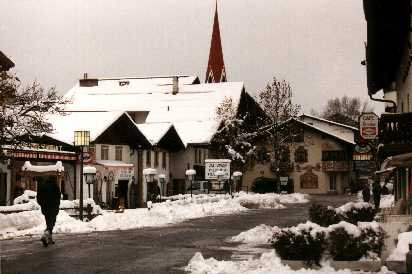
Seefeld-im-Tyrol (photo Sam Mitchell)
THE PRISONER: Do Not Forsake Me Oh My Darling
(Pat Jackson: August 1967)
On the trail of Professor Seltzman, Number 6 travels to Kandersfeld in
Austria (World Backgrounds 301179).
Stams
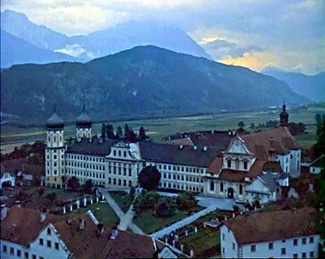
THE CHAMPIONS: The Final Countdown (John
Gilling: Early 1968)
Pilot, Wolfe Eisen is visited by Richard Barrett in an Austrian
hospital (Stift Stams) where he is being treated for his injuries.
(Spotted by Paul Stroud, November 2008)
Styria
Toplitzsee
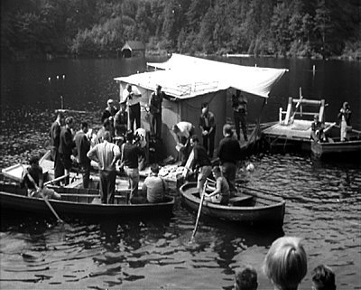
DANGER MAN: Under the Lake (Seth Holt: 1959)
Watched by John Drake, the Austrian authorities dredge the lake and
find a large quantity of forged American bills (newsreel footage of
1959 a team financed by the German magazine Stern retrieving
£72,000,000 in Nazi forged currency).
Vienna
Embassy of France, Technikerstraße, Vienna, Austria

DANGER MAN:
A Room in the Basement
(Don Chaffey:
1964)
Establishing shot of
Susan Turbull’s
hotel.
(Identified by Sietse Postma, January 2024)
Heldenplatz
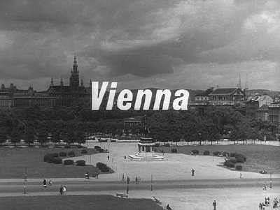
DANGER MAN: The Key (Seth Holt, 1959)
Establishing shot of Vienna.
(Spotted by Paul Stroud, February 2014)
Reisnerstraße, Vienna

DANGER
MAN: You’re
Not In Any Trouble, Are you? (Don Chaffey: February
1965)
John Drake goes straight
to the British Embassy when he arrives in Rome to investigate the death
of Bill
Ellis (41 Reisnerstraße).
(Identified by Sietse Postma, August 2023)
Vienna State Opera, Wiener
Ringstraße
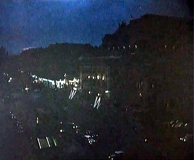
THE BARON: Enemy of the State (Jeremy
Summers: December 1965)
A British agent is held by the secret police in this Easter European
Country (World Backgrounds clip 307259 “Pan Across City Centre Of
Vienna. Night Showing Busy Traffic And Neon Signs).
Vorarlberg
Brand
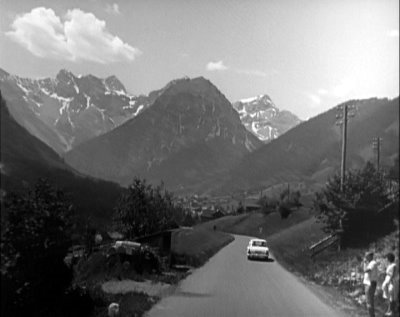
DANGER MAN: A Room in the Basement (Don
Chaffey: 1964)
Swiss mountains – establishing shot Switzerland (L82, Brand).
(Identified by Sietse Postma, May 2022)
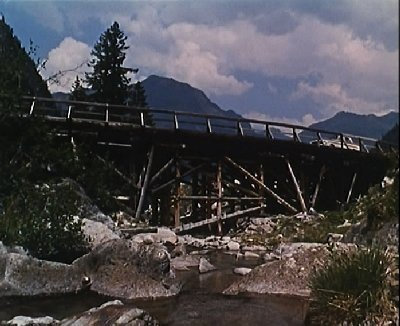
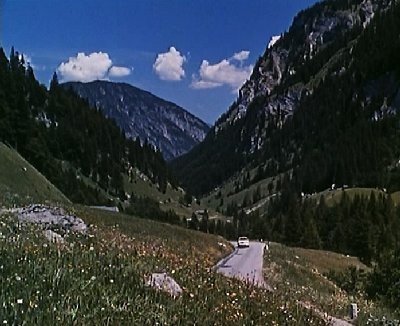
THE SAINT: The Russian Prisoner (Peter
Moxey: February 1966)
Simon Templar and Irma Jorovitch drive from Geneva through the alps to
Lucerne to a hotel near the Villa Bauregarde. where Karel Jorvitch is
being held (L82, Brand).
(Identified by Sietse Postma, May 2022)
Lech
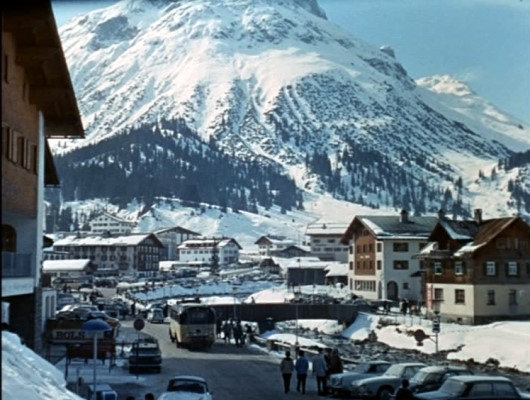
DEPARTMENT S: The Ghost of Mary Burnham
(Cyril Frankel : 1968)
Stewart Sullivan meets Sir Curtis in a cable car in an Alpine ski
resort.
(Spotted by Michael Richardson, November 2023)
Schruns
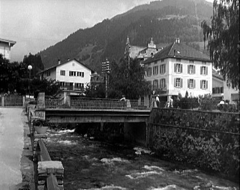
DANGER MAN:
A Room in the Basement
(Don Chaffey:
1964)
establishing shot Switzerland.
Vorarlberg Silvretta Hochalpenstraße
THE PRISONER: Do Not Forsake Me Oh My Darling
(Pat Jackson: August 1967)
Potter drives up a steep mountain pass following the radio signal
leading to Number 6.
(Identified by Daniel Bauer, March 6th, 2013)
THE SAINT: The Russian Prisoner (Peter
Moxey: February 1966)
Simon Templar and Irma Jorovitch drive from Geneva through the alps to
Lucerne via a winding mountain road.
(Identified by Daniel Bauer, March 6th, 2013)
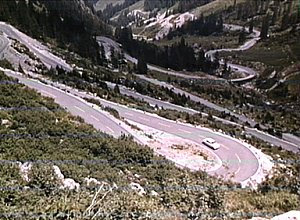
Return
to Index